k-Day 125｜喀拉沃愣
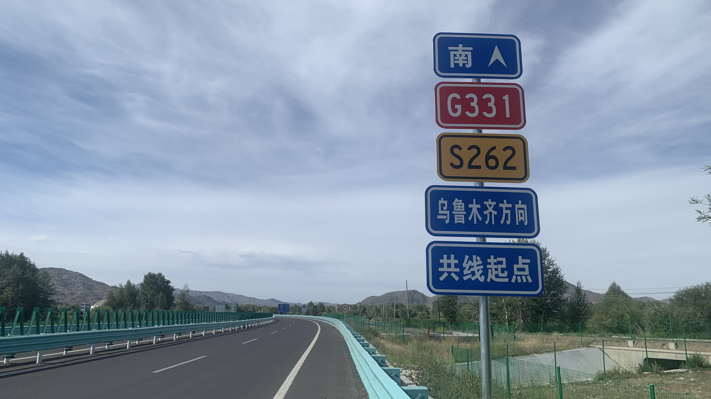
從今天開始只要沿著G331國道就能抵達烏魯木齊。
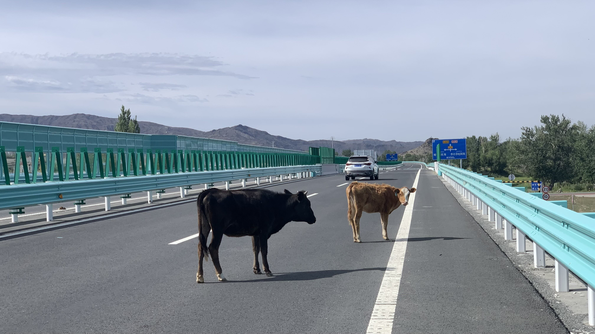
本以為國道就是單調的沒有驚喜，這兩隻牛是從哪裡走上來的？
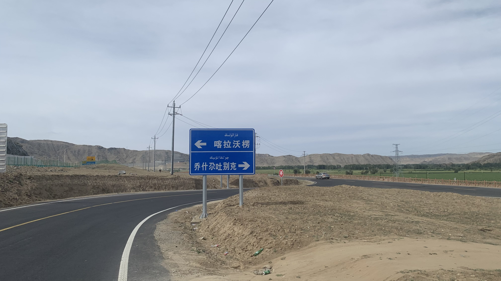
看到喀拉沃愣的路標，是前天在博物館看到的喀拉沃愣石人出土的地方。
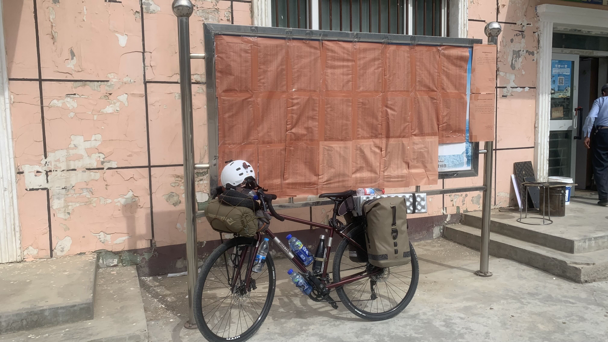
到了村委會門口，將二十三號靠在佈告欄上。公告的紅單子並非榜單，而是村選舉的「投票人清單」。相當赤裸的操作，整個村有投票權的人連名帶姓，包括出生年月日等等的詳細個資都列在上面。
旁邊有個現代化公廁，門是上鎖的。問了坐在門前的老伯可否上廁所？他指了指遠方廣場邊緣沒有們的旱廁。看來是工程經費下來了，卻沒有安排人力維持。
上完廁所問了老伯有沒有聽過石人？他搖搖頭繼續坐著曬太陽。
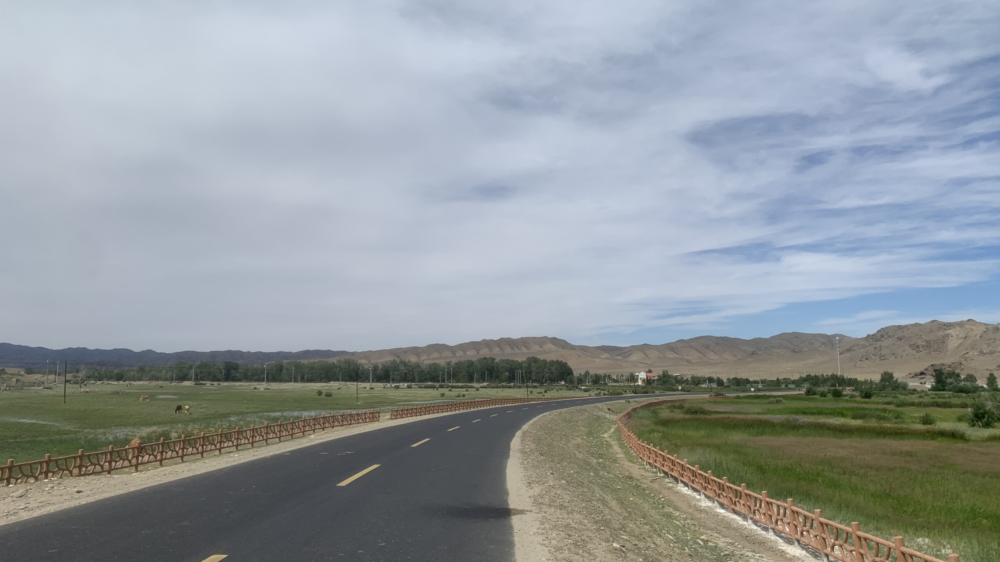
路上只看到隕石山的路標，沒啥興趣，就繼續沿著查干河走吧。
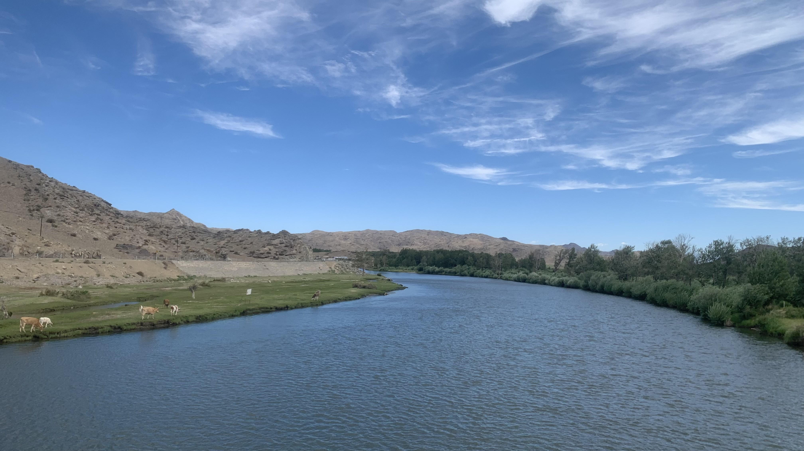
河邊的牛隻貌似過得很滋潤。騎著馬從哈拉和林一路沿著河谷，翻越阿爾泰山抵達青河，途經阿勒泰到伊寧，甚至再過口岸從哈薩克南邊、吉爾吉斯北邊往西走，就是完整的石人路線了。
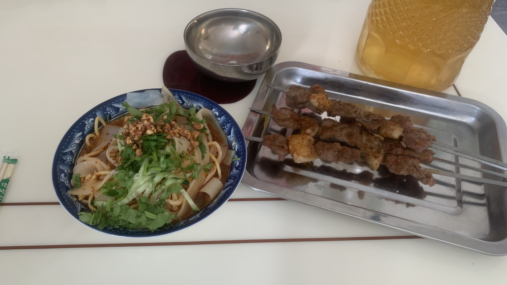
中午風有點強，找了間烤肉店，點了涼皮和烤串。老闆說他把我誤人成抖音上的一個騎行者，那個人剛好這幾天也在附近，因此他剛剛特地跑出門迎接我。
真是抱歉，我連抖音軟件都沒有。
老闆問我經過哪些地方，問完後的第一個問題是：「你覺得哪裡的東西最好吃？」真是好問題，我嘴裡塞著烤肉，該怎麼回答才不失禮數又保留誠實呢？
先轉移話題，問老闆有沒有見過石人，沒想到我拿出照片後，他們都說見過，而且對扎馬特和查干郭愣的石人沒反應，只說看過喀拉沃愣的石人。
「他就在隕石山那裡。」老闆說。聽了相當興奮，老闆沒騙人，是真的知道呢。「這個現在找到了可以賣多少錢？」老闆接著小聲問。
老闆推薦我走S228省道，比起G331，這條路上補給點更規律。「因為是舊的路嘛，每隔幾十公里就會有人。」
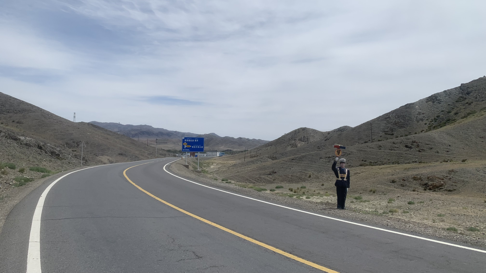
聽從老闆的建議，這條路確實好走，沿途幾乎沒有車。
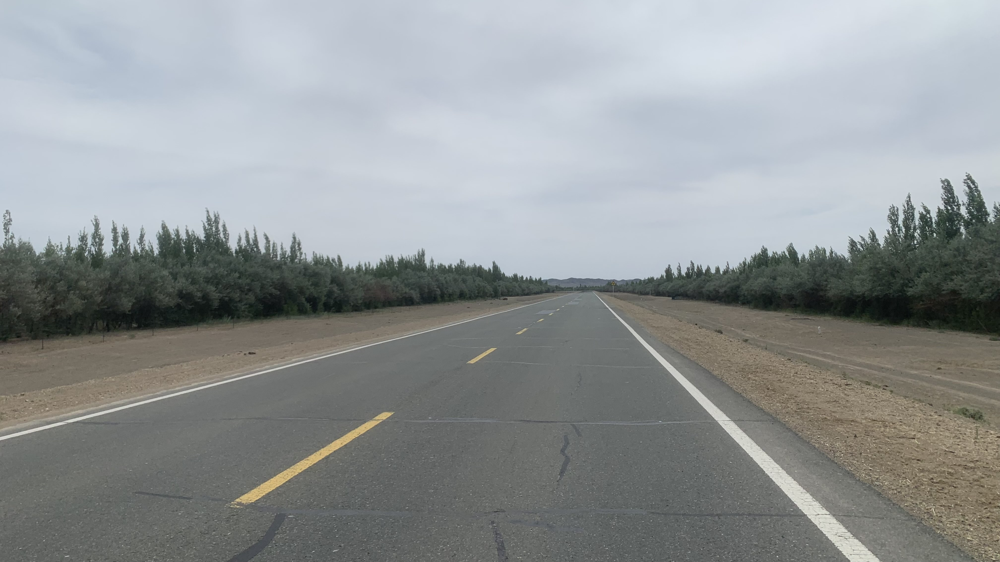
身體約莫能夠感受到側風強勁，但是兩旁種植的防風林削掉大半的風力。少了西風從旁邊推身體，剩下被過濾後的風從斜後方輕輕推著我前進。
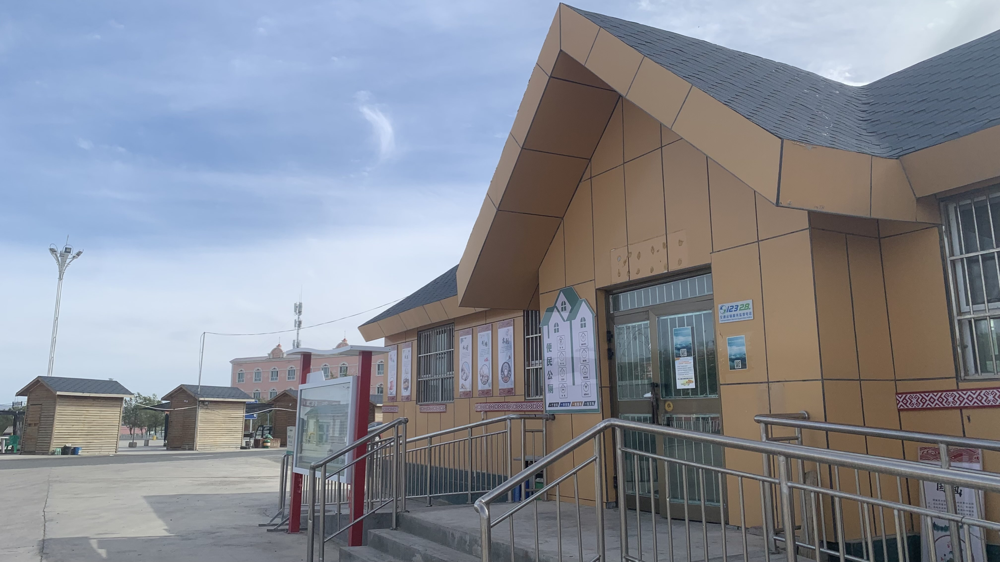
傍晚抵達傳說中可以在水泥地上露營的便民公廁。不愧是觀光勝地，新疆的公共廁所蓋得相當高級。
不過這地方釘不了營釘，而且就位在大馬路旁邊，實在不是適合扎營的地方。問了旁邊一直偷看我的修輪胎大哥，他推薦後面的零公里客棧。
旅社的大人們都在休息，一個小朋友來幫我開門，很流利地說：「今天沒有房了。附近還有一間叫老曹旅社，但是他的環境不好。」
「能不能讓我在院子搭帳篷呢？」
「可以，搭帳篷不收錢。」
拉著二十三號坐到院子角落，小孩拿了一瓶農夫山泉給我。
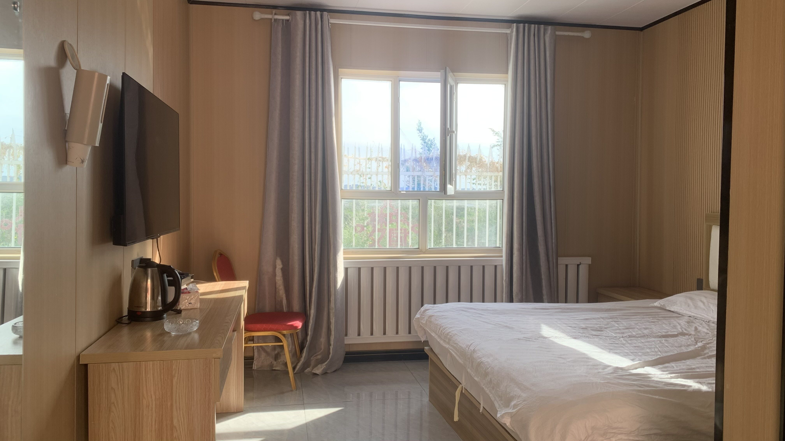
喝水吃饢時，老闆走出來，說：「後面有一間剛退房整理好的，一晚上一百元，你要不要看一下？」
今日花費： 午餐 31、飲料 13.5、住宿 100元